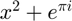

ECE 417 Project: Replication of Maximal Similarity Based Region Merging (MSRM)
Hui Wu 20515692
Contents
Problem Formulation
[Talk about problem to solve]
Proposed Solution
[Walk through the algorithm + LaTeX]

Data Sources
[use images and segmentation from paper] [marks are 2 step: 1 following paper closely, and some to test limits of algorithm]
Solution
[necessary details on structure of algorithm
function adjMatrix = calculateSimilarities(adjMatrix, regions)
[i, j, ~] = find(adjMatrix);
% For neighboring regions, calculate the similarity
for k = 1:size(i, 1)
rgn1 = i(k);
rgn2 = j(k); h1 = sqrt(regions(rgn1).hist/regions(rgn1).area);
h2 = sqrt(regions(rgn2).hist/regions(rgn2).area); adjMatrix(rgn1, rgn2) = h1' * h2;
end
endHousekeeping
clc; clear; close all;
Constants
DIRECTORY = 'test/'; IMG_SUFFIX = '.bmp'; SEG_SUFFIX = '_seg.png'; MARK_SUFFIX = '_marked.png'; BIN_SIZE = 256/16; % 16*16*16 = 4096 bins image_names = {'bird'};
Run MSRM segmentation for each image set
for (name = image_names)
image = imread(strcat(DIRECTORY, name{1,1}, IMG_SUFFIX));
imageSeg = imread(strcat(DIRECTORY, name{1,1}, SEG_SUFFIX));
imageMark = imread(strcat(DIRECTORY, name{1,1}, MARK_SUFFIX));
h = size(image, 1);
w = size(image, 2);
Image Preparation
imageRegions = labelRegions(imageSeg, h, w);
User Marked Image
Takes a user-marked image and assigns pixels to a set * 2: Object (Mo) * 1: Background (Mb)
imageMarked = zeros(h, w);
g = zeros(1,1,3);
b = zeros(1,1,3);
g(:,:,:) = [0 255 0]; % Green
b(:,:,:) = [0 0 255]; % Blue
for (i = 1:h)
for (j = 1:w)
if (imageMark(i, j, :) == g)
imageMarked(i, j) = 2;
elseif (imageMark(i, j, :) == b)
imageMarked(i, j) = 1;
end
end
end
Image Quantization
imageQuantized = size(h, w);
for (i = 1:h)
for (j = 1:w)
r = floor(double(image(i, j, 1))/BIN_SIZE);
g = floor(double(image(i, j, 2))/BIN_SIZE);
b = floor(double(image(i, j, 3))/BIN_SIZE);
% Store each combination (4096) in a unique bin
binNumber = r + BIN_SIZE*g + BIN_SIZE*BIN_SIZE*b;
imageQuantized(i, j) = max(binNumber, 1);
end
end
Intialize Regions
regionCount = max(imageRegions(:));
regions = createRegions(imageRegions, imageQuantized, imageMarked, h, w, regionCount);
adjMatrix = createAdjacencyMatrix(imageRegions, regions, regionCount, h, w);
similarities = calculateSimilarities(adjMatrix, regions);
while 1
merged = 0;
Merging Stage 1
Merge members of Mb (type = 1) with members of N (type = 0) Repeat until no merging occurs.
while 1 [regions, marked] = markRegions(similarities, regions, regionCount, 1); if marked == 0 break; else merged = 1; end % Merge Regions [imageRegions, regionCount, regions] = mergeRegions(imageRegions, regionCount, regions); adjMatrix = createAdjacencyMatrix(imageRegions, regions, regionCount, h, w); similarities = calculateSimilarities(adjMatrix, regions); end
Merging Stage 1
Merge members of N (type = 0) with other members of N Repeat until no merging occurs.
while 1 [regions, marked] = markRegions(similarities, regions, regionCount, 0); if marked == 0 break; else merged = 1; end % Merging marked regions [imageRegions, regionCount, regions] = mergeRegions(imageRegions, regionCount, regions); adjMatrix = createAdjacencyMatrix(imageRegions, regions, regionCount, h, w); similarities = calculateSimilarities(adjMatrix, regions); end
Exit Condition If no merging occurs in either stage, merging stage is complete
if (merged == 0) break; end
end
Object Extraction
extractionMask = zeros(size(imageRegions));
for (i = 1:regionCount)
if regions(i).type ~= 1
extractionMask(find(imageRegions == i)) = 1;
end
end
idxs = find(extractionMask == 0);
extractedImage = image;
for (i = 1:3)
tmp = extractedImage(:, :, i);
tmp(idxs) = 255;
extractedImage(:, :, i) = tmp;
end
Visualization of Results
figure; imshow(image); figure; imshow(imageMark);
figure; imshow(extractedImage);

end
Analysis & Conclusions
[talk about results, limits etc]
Source Code
[list functions]